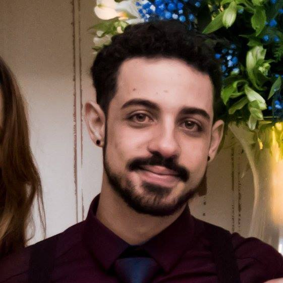

Daniel Pereira Zitei
Data Scientist
I was born in Santos on march 24, 1996, I'm graduating from FATEC-RL in Internet Sistems and currently work as a data scientist. I love play video games, in my free time I make speeches about artificial inteligence and since kid I read about science fiction, new tecnologies and artificial inteligence.
Contact

Open Projects

Stack Overflow